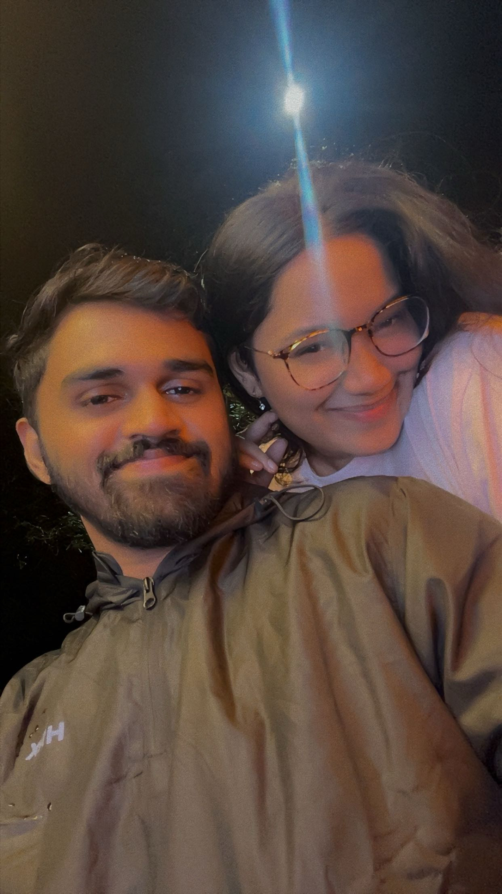
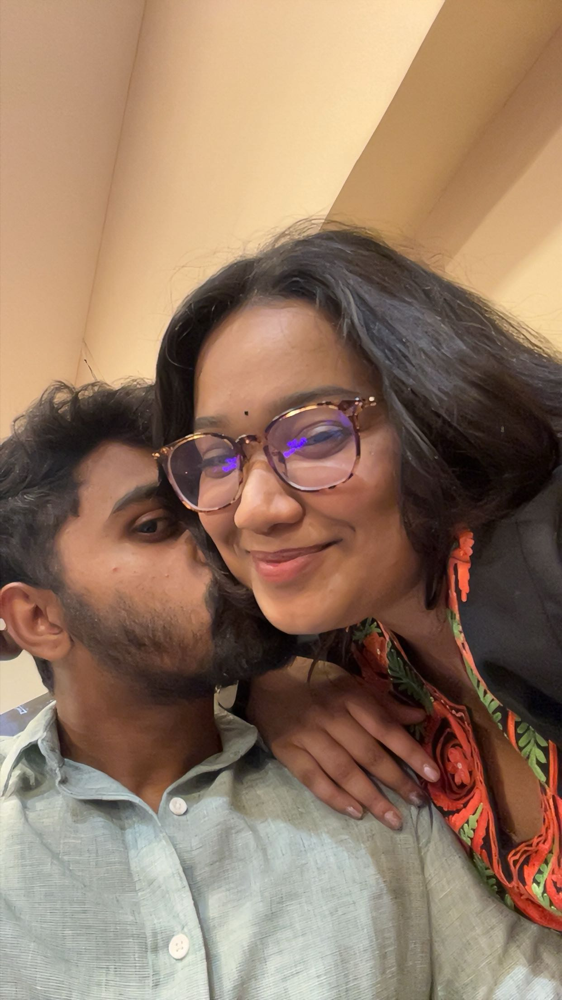

The Things I’m Sorry For
A letter from the most honest part of me.


Babe,
As I'm writing this letter, I'm getting more and more emotional.
Because I'm thinking about all the moments we've shared — the silly ones, the beautiful ones, the difficult ones, and all the little memories that somehow became so important to me.
And I know I'll probably get even more emotional as I move forward through these hours, because every one of them is a piece of us.
But there's something I want you to know.
I always want to see you smile.
Please don't cry because of me. ❤️
I know I'm not always the boy you wished I would be.
Sometimes I'm not as supportive as I should be. Sometimes I don't reassure you enough. Sometimes I don't show you how much I care. Sometimes I do stupid things, say the wrong things, or simply don't realise what you need from me.
And I'm sorry for all of that, babe.
I'm sorry for the moments when I made you feel like you weren't understood, appreciated, or loved enough.
I'm not going to pretend I'm perfect. I'm not.
But I want you to know that I see the things I need to change. And I genuinely want to become better — not just by saying it, but by showing you.
You deserve someone who listens. Someone who reassures you. Someone who stands beside you and makes you feel loved, even in the smallest moments.
And I want to become that person for you.
So if I've ever made your heart heavy when all I wanted was to make it happy… I'm sorry.
Thank you for staying through the imperfect version of me.
And I promise I'll keep working on myself, because you mean far too much to me to stop trying.
Just keep smiling, Kashu. ❤️
Because your smile is still one of my favourite things in this world.
I'm sorry. I'm learning. I'm trying. And I love you.
— Ayush ❤️